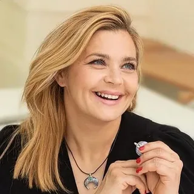
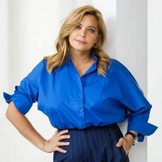
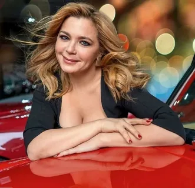
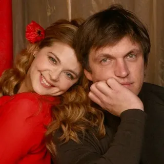
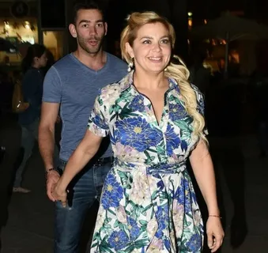
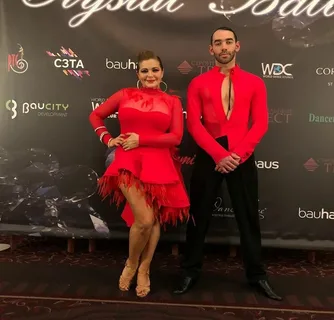
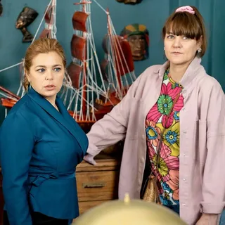
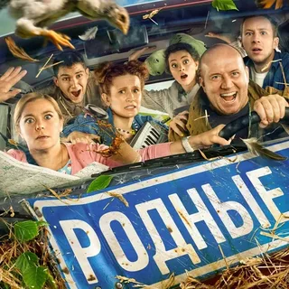
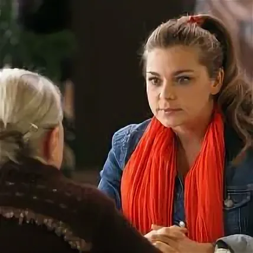
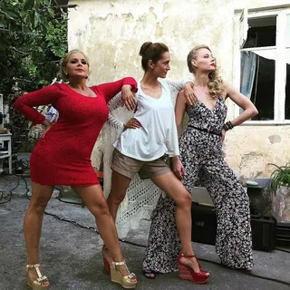

Пегова Ирина Сергеевна
- Биография>
- Личная жизнь
- Кино
Биография актрисы



- Ири́на Серге́евна Пе́гова (род. 18 июня 1978, Выкса, Горьковская область, РСФСР, СССР)
- российская актриса театра и кино, телеведущая. Заслуженная артистка Российской Федерации (2012)
- Дважды лауреат российской театральной премии «Золотая маска» (2005, 2008).
- Родилась 18 июня 1978 года в городе Выкса Горьковской области (ныне — Нижегородская область).
- В 1995 году поступила на актёрское отделение Горьковского театрального училища (творческий руководитель — Василий Фёдорович Богомазов). Во время учёбы была замечена столичным режиссёром Петром Фоменко. В 1997 году, оставив после второго курса учёбу в училище, отправилась в Москву и поступила в ГИТИС на актёрско-режиссёрский курс Петра Наумовича Фоменко
Личная жизнь актрисы



- Бывший муж — Дмитрий Орлов (род. 1971), актёр; развелись в 2011 году
- Сейчас Ирина часто появляется на публики со своим партнером по танцам - Евгением Раевым.
- Начался их роман с проекта Танцы со звездами. Танцуют до сих пор. Хотя у них тоже есть разница в возрасте. Ирине 42, Евгению 27. Но причем тут разница в возрасте, когда люди горят одним и тем же, им хорошо вместе. Тем более, дочка у Ирины от первого брака уже есть.
Карьера в кино
Карьеру в кино Ирина Сергеевна начала в молодости, уже после окончания театрального вуза. Актриса дебютировала в 2002 году, сыграв эпизодическую роль военного ветврача в картине «Спартак и Калашников». А слава настигла Пегову после первой же главной роли, которую она исполнила в фильме Алексея Учителя «Прогулка».
Список самых последних работ актрисы
- Шаляпин
- Моя мама — шпион
- Беспринципные в деревне
- Я на перемотке!
- Тайна амулета
- Открывай, полиция!
- Далёкие близкие
- Родные



